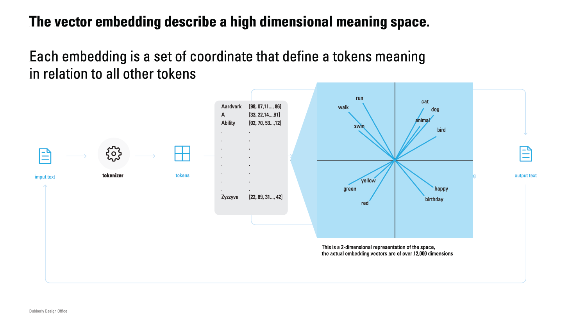
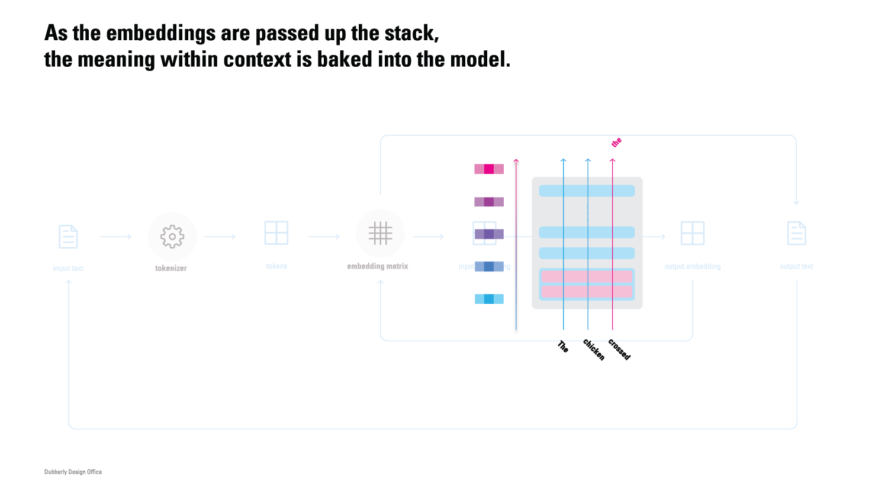
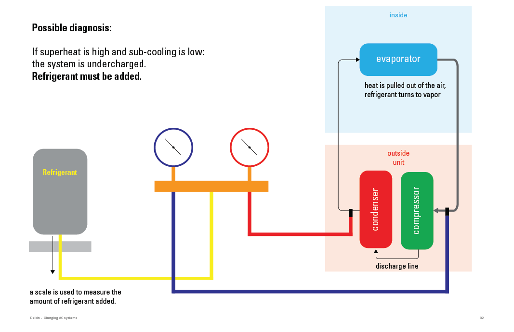
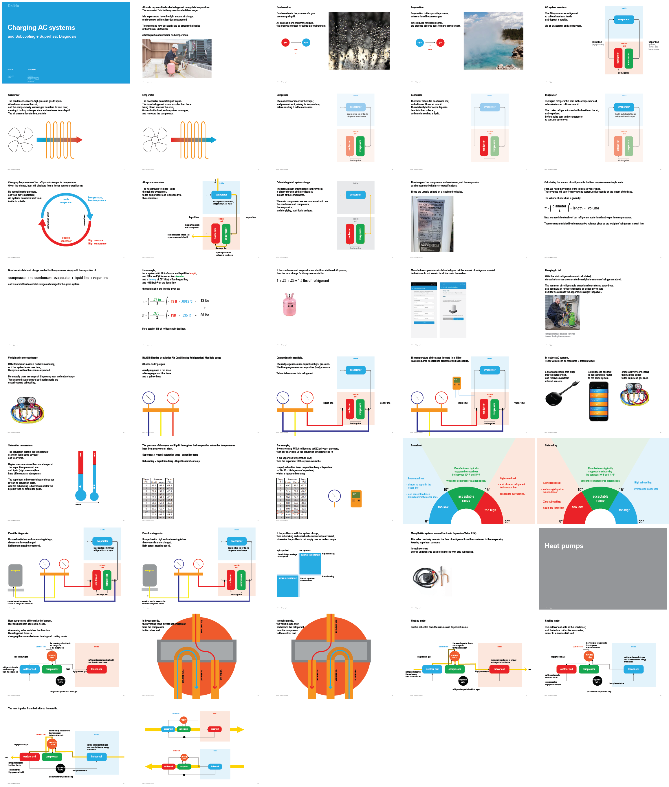

Systems diagrams
While working at Dubberly Design Office, I was often given the task of researching a topic, creating diagrams to explain its workings, and writing and delivering a presentation explaining it, either to a client or internally within the office.
Inner workings of LLMs:
The purpose of this presentation was to explain the underworkings of OpenAIs GPT-3 model, when it was new and exciting. Below are some key slides, and the thumbnails of the rest.
A visualization of the high dimensional embedding space:

And the self-attention layers that give the model the ability to understand context:

Thumbnails of the full presentation:

Subcooling and Superheat - understanding heat pumps.
The purpose of this presentation was to help create an app for technicians to be able to service heat pumps, particularly with the process of recharging refrigerant. I created this presentation to better understand how these HVAC systems worked.
A diagram of the refrigerant, manifold, and HVAC system, including the gas and liquid lines:

A diagram of the reversing valve, the mechanism that switches a heatpump into AC of heating mode:
A chart for diagnosing superheat and subcooling:
Thumbnails of the full presentation:
